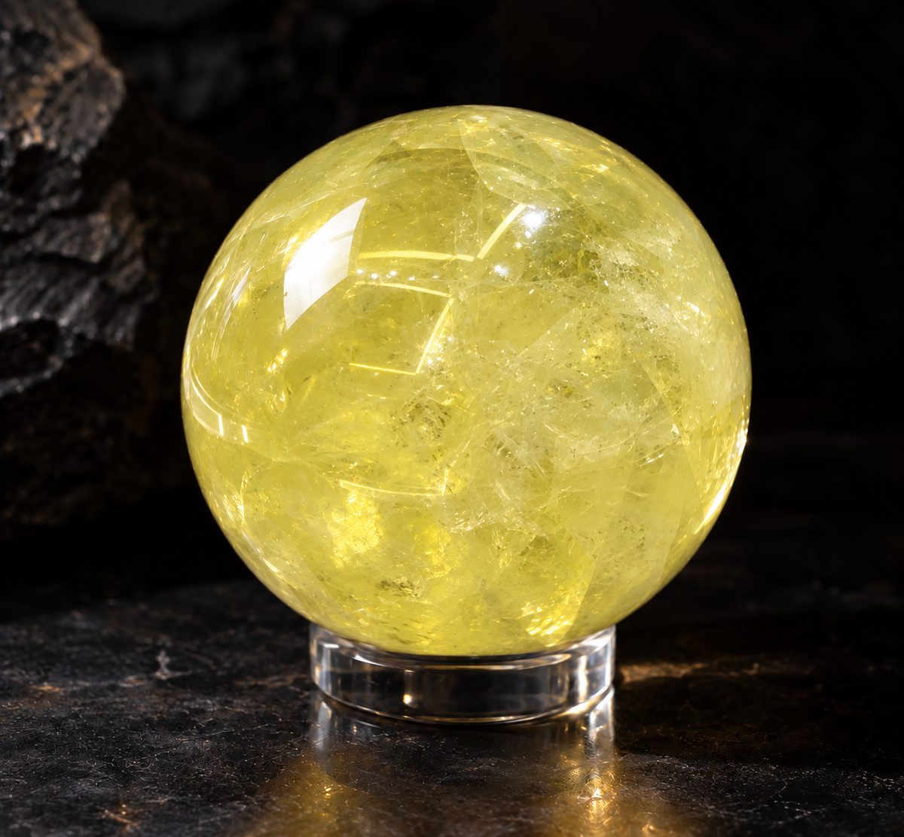

BRAZILIAN CITRINE · 2027
2027年は、あなたの番です。
写真はイメージです。天然石のため、色味・形は1つ1つ異なります。
みづきです。
このページは、シトリン鑑定にご応募くださり、鑑定で選ばれた方にだけお送りしている、お迎えのご案内です。
11月25日の夜にお返しした結果を、思い出しながら、読み進めてください。
お代のことも、届くまでのことも、すべてこの1枚に書きました。ゆっくりで大丈夫です。
毎朝の家のこと。毎月のやりくり。職場で、人が嫌がる役を引き受けること。親の様子を見に行くこと。あなたがこの1年、やめずに続けてきたことを、1つ思い出してください。
では、それを数えたことはありますか。たぶん、ないと思います。続けている人は、数える前に、次を始めてしまうからです。
私のところには、こんな言葉が届きます。「家族に、ありがとうと言われたことがない」。「自由に使えるお金が、ない」。「家のことがいつも先で、自分の人生を削ってきた」。全部、同じことを言っています。これだけやってきたのに、自分には何も残っていない。
私はこれまで2万人以上の方を視てきて、何度も同じものを視ました。がんばったことを数えずに、すぐ次をがんばっている人です。私はこれを「摘み忘れ」と呼んでいます。実ったものを、摘まずに置いている、という意味です。
絵にすると、こうです。洗濯物は、もう乾いています。でも取り込まずに、次の洗濯機を回している。乾いたものは、外に出したまま。あなたのがんばりも、もう乾いています。取り込んでいないだけです。取り込む、とは、数えることです。
2024年も、2025年も、乾いたままのものがありました。人からの「助かった」のひとこと。休んでいい日。頼っていい相手。消えたのではありません。乾いたまま、まだそこにあります。報われていないのではない。受け取っていないだけです。
人は、足りないと思っているあいだは、頼めません。休めません。「ありがとう」も、受け取れません。足りないのに頼むのは、悪いことに思えるからです。
数えると、足りている分が見えます。見えた分だけ、頼める。休める。受け取れる。変わるのは、翌朝の最初の動きです。
2万人以上を視てきて分かった、
摘み忘れの人の3つの共通点
数えずに次をがんばってきたのは、欲張りだからでも、心配性だからでもありません。守るものがあったからです。足りなかったのは、「もう数えていい」と教えてくれる人だけでした。
数えた夜は、楽になります。でも朝になると、また「足りない」から1日が始まる。あなたが悪いのではありません。摘み忘れの人は、自分で数えたものを、自分では受け取れないんです。人のほめ言葉を「まだまだです」と返す人が、自分のほめ言葉だけ受け取れるはずがありません。
洗濯物も同じです。取り込んでも、自分では、まだ湿っている気がする。だから朝、また外に干してしまう。「もう乾いているよ」と誰かに言ってもらって、初めてたためます。取り込むのが、数えること。「もう乾いている」と認めてくれる、自分以外の誰かが要ります。
私は2万人以上の方を視てきましたが、手のひらに置くものを人にお勧めしたことは、数えるほどしかありません。ものに頼ってほしくないからです。それでも今回お渡しするのは、認める人がそばにいない方に、認めた印を残すためです。だから、渡す前に視ます。鑑定が先で、石があと。この順番は変えません。
同じ仕事の方には「それは言わないほうがいい」と止められました。年末の占いは、「来年はいい年です」のあとに「ここだけ気をつけて」を1つ足します。「気をつけて」を持ち帰った人は、足りないままなので、来年もまた来るからです。「もう足りています」と言われた人は、来年、来ません。だから、誰も言わないんです。今回は、黙らないと決めました。
鑑定は、足りないところを探す仕事ではありません。もう実っている分を、見つけて、認める仕事です。
ブラジルは、いま、春から夏へ向かっています。日本が冬に向かういま、地球の裏側は、これから実る方へ進んでいます。
そこで出会ったのが、この石です。
黄色い、水晶の仲間の石です。昔から、実りを受け取る石と言われてきました。黄金色が金貨や麦の穂を思わせることから、商人が守り石にしてきたと伝わっています（言い伝えです）。この石の役割は、1つ。私が視て、「もう実っている」と認めた印です。
報われた分を、受け取って、置く。この石の役割は、色と名前に、そのまま入っています。お金も、家族からの「ありがとう」も、自分の時間も、あきらめていたことも。入ってきた分を「足りない」で流さずに、残すための石です。

天然のシトリンは、1つとして同じ色がありません。あなたの手に届く1つは、世界に1つだけの色です。1つずつ、光に透かして、色を見て選びました。天然のものを1つずつ選んだ分なので、数には限りがあります。
2万人以上を視てきて、
私はこう考えています。
流れを通すもの。整えるもの。守ってくれるもの。石でも、お守りでも、お札でも。これまでに何か1つでも手元に置いてきた方へ。
それは、正しかったんです。手放す必要はありません。
ただ、役割が違います。通すもの、整えるもの、守るものは、そのままで大丈夫です。通ってきたものを、「もう受け取っていい」と認める印は、別の役割です。
シトリンは、あなたを別の人に変える石ではありません。あなたがもう手にしている実りを、私が視て認めた印です。効果・効能を保証するものではありません。
だから私は、売る前に視ます。あなたを視ていないのに、お渡しすることはしません。鑑定で選ばれた方にだけ、このご案内をお送りしています。
「自分のためにものを迎えていいのか」と迷った方へ。貯金が先。家族が先。自分のことは、あとでいい。そう生きてきた方ほど、迷うと思います。これは、ご褒美ではありません。報われた分を、認めた印です。その迷いが、かごに入れて戻す手です。摘み忘れ、そのものです。自分のために1つ迎えること。それが、2027年に最初に数える1つになります。
年を越してから置くと、2027年は「足りない」から始まっています。年を越す前に置いて、1つ置いてから出る朝に、体が慣れる時間が要るんです。
ご褒美の値段と、比べないでください。比べるなら、同じ1年をもう1度くり返すことと比べてください。認めた印は、1つ迎えれば、2027年の365日、同じ玄関にあります。
受付は、11月30日(月) 0:00で締めます。
2027年の、ある朝です。玄関で1つ数えてから、出ていく。
職場で「助かった」と言われて、「ありがとう」と受け取る。買い物で、自分の分を、かごから戻さずに買う。親の病院の帰りに、半年延ばしていた自分の通院を予約する。
家族に「今日は任せた」と言って、先に休む夜。日曜日に、休む。若いころにあきらめていたことを、夜に少しだけ、自分の力でやってみる。
そして2027年の12月。1年をふり返るとき、数えているのは、できなかったことでしょうか。それとも、できたことでしょうか。
1年前より少しだけ、数えられるものが増えている。そういう年末を、迎えていただきたいんです。
そして、あなたが先に数えると、見ている大切な人も、数えていいと知ります。あなたが受け取ることは、わがままではなく、その人へのいちばん静かな贈り物です。
お代をお見せする前に、1つだけ聞かせてください。
迎えなかったとしても、起きることは1つだけです。2026年と全く変わらない1年が、もう1度始まる。それ以上のことは、何も起きません。それでも、いいですか。
このシトリンは、1つ迎えれば、2027年の365日、同じ玄関で、毎朝あなたの「昨日の1つ」を受け取る、認めた印になります。
| 商品名 | 実りのシトリン（天然シトリン） |
|---|---|
| お代 | 79,800円（税込）／通常価格149,800円 |
| 送料 | 1,000円（お支払い総額 80,800円） |
| 受付期間 | 11月30日(月) 0:00まで |
| 大きさ | 手のひらで包める大きさ（天然石のため1つずつ異なります） |
| お届け | 中身の分からない無地の箱でお送りします。届く時期は商品ページをご確認ください。 |
| お支払い | STORESの決済ページで行います。 |
| ご案内先 | シトリン鑑定にご応募くださり、鑑定で選ばれた方 |
私が視て「もう実っている」と認めた印として、夜に数えた1つを朝の玄関で置くための天然石です。シトリンにまつわるお話は言い伝えです。効果・効能を保証するものではありません。
はい。役割が違うので、いま置いているものの隣に置いていただけます。
天然石のため、色味・模様・大きさは1つ1つ異なります。写真はイメージです。
中身の分からない無地の箱でお送りします。
STORESから注文確認メールが届いていれば受付済みです。届かない場合は、ご注文番号とお名前をLINEでお知らせください。カード番号や確認コードは送らないでください。
STORESの商品ページと、特定商取引法に基づく表記をご確認ください。
2027年は、がんばった人に配られる年ではなく、数え始めた人に配られる年だと、私は感じています。
誰かのためにがんばる年ではなく、自分の力で、1つ成し遂げる年に。若いころにあきらめていたことを、取り戻す年に。
ずっと順番が後ろだったあなたへ。2027年は、あなたの番です。
不安なまま、ひとりにしないからね。
みづき
受付は11月30日(月) 0:00まで
天然石のため、色味・模様・大きさに個性があります。効果・効能を保証するものではありません。医療行為ではありません。発送・返品・交換については、STORESの商品ページと特定商取引法に基づく表記をご確認ください。